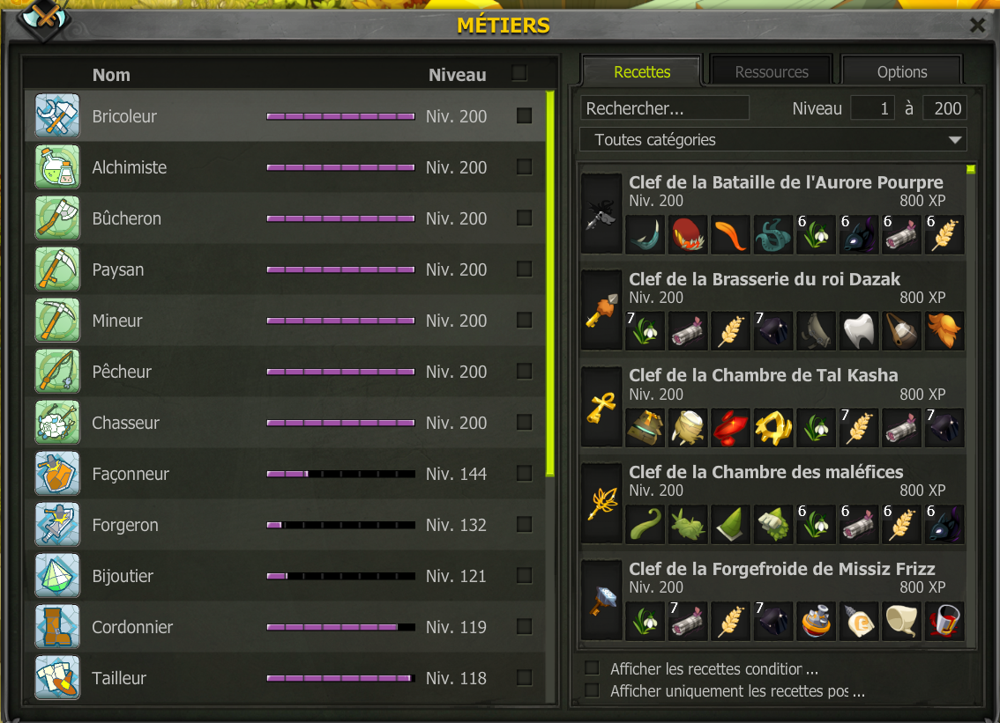

Dans dofus vous avez la possibilité de faire plusieurs metiers qui seront nécessaire pour votre aventure. Que ce soit pour votre propre personnage ou bien pour vous faire des kamas. Dans dofus il y a types de metiers les metiers de recolte et les metiers de craft. Dans les metiers de recolte nous avons part exemple: paysan, alchimiste, pecheur, chasseur. Et dans les metiers de craft donc des metiers qui serviront a crée des stuff pour votre personnage ou pour vous faire des kamas nous avons: bijoutier, bricoleur, façonneur, forgeron et bien d'autre.